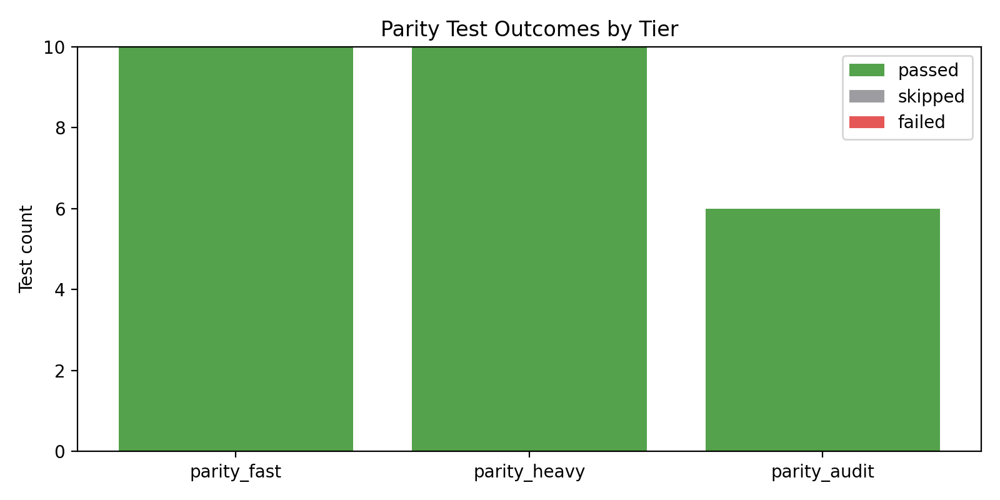
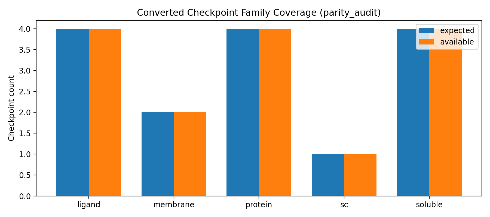
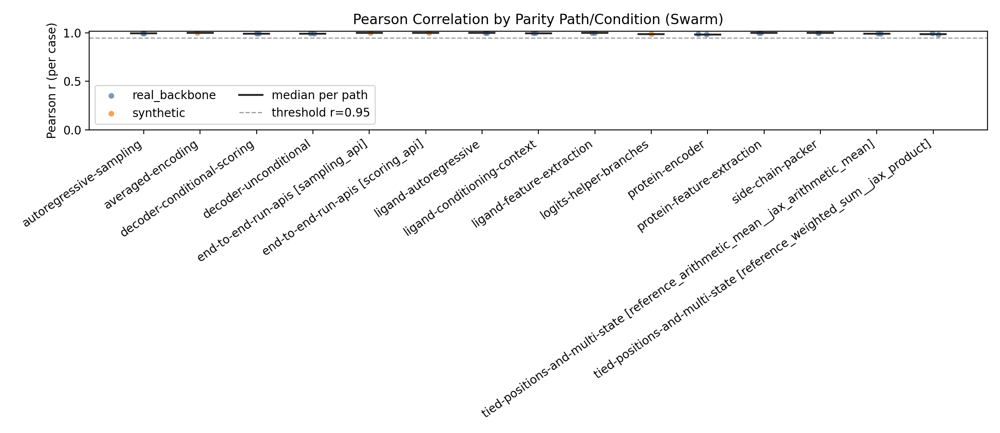
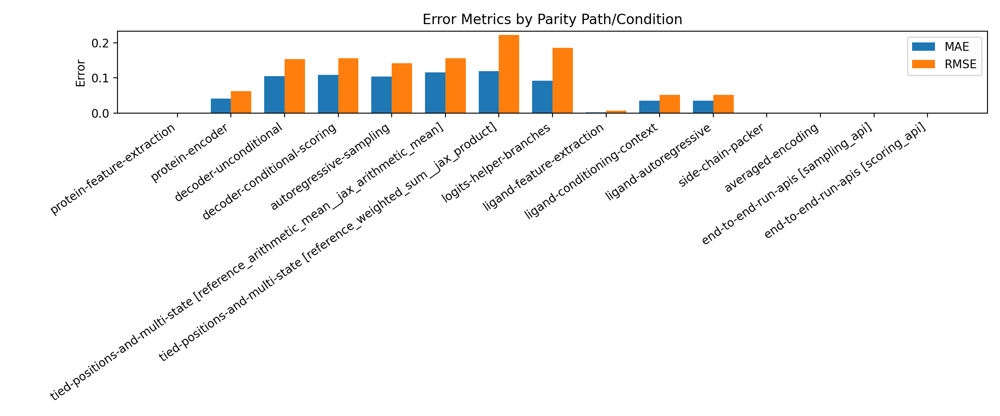
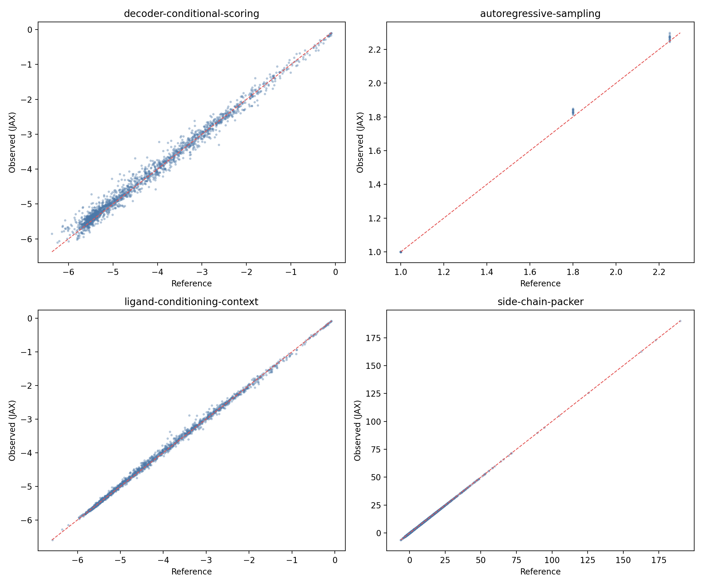
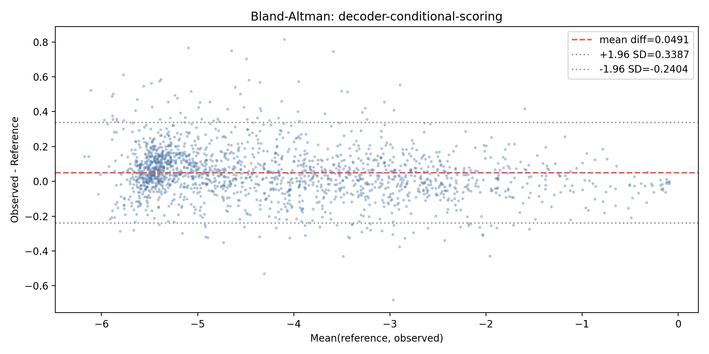
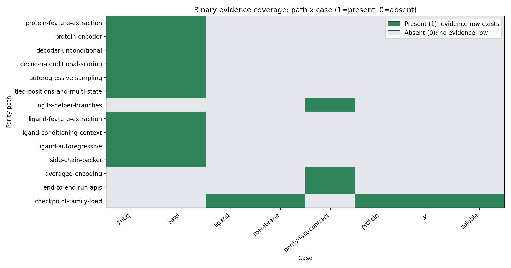
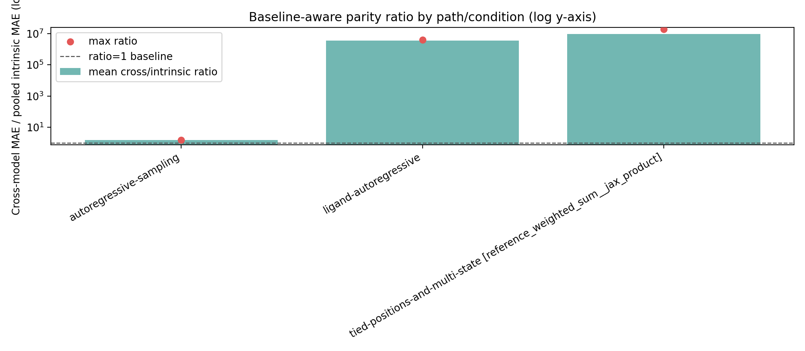
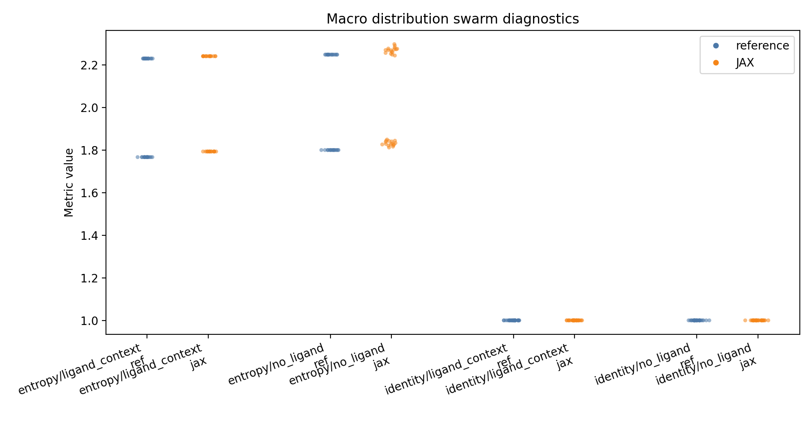
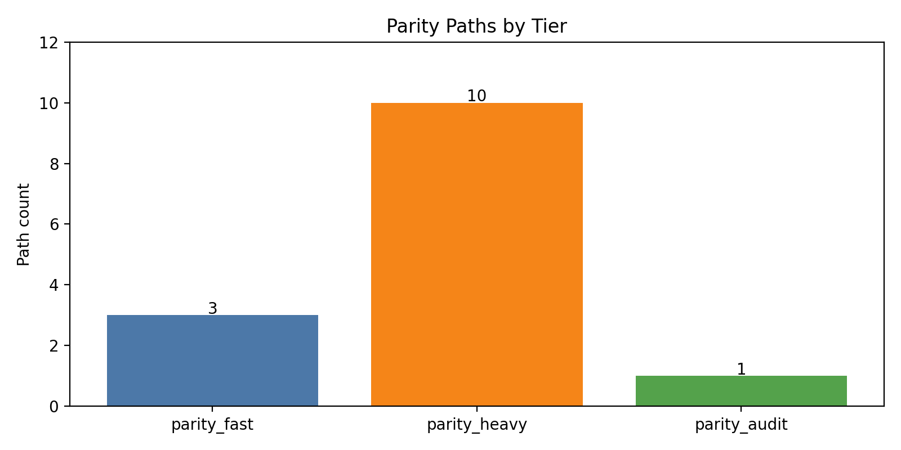

Generated: 2026-04-09T23:54:48+00:00 (UTC)
Status: Tier checks and collected lane evidence currently support parity on this corpus.
parity_fast: deterministic fixture and helper-branch parity checks (no upstream checkout required).parity_heavy: reference-backed numerical parity checks against pinned LigandMPNN.parity_audit: converted checkpoint-family load/audit checks across model families.| Term | Interpretation |
|---|---|
| Mean r / Min r | Pearson correlation summaries per path/condition lane; values nearer 1 indicate tighter parity. |
| Pearson pass rate | Fraction of per-case Pearson checks passing policy thresholds for that lane. |
| n/a(categorical | pending | excluded) | Metric intentionally absent because the path is categorical, not instrumented, or excluded. |
| Cross/intrinsic ratio | Cross-model MAE divided by pooled intrinsic MAE; near-zero denominators can inflate ratios. |
| Coverage heatmap values | Binary semantics only: 1 means at least one evidence row is present; 0 means absent. |
| Tier | Tests | Passed | Skipped | Failed | Notes |
|---|---|---|---|---|---|
parity_fast | 10 | 10 | 0 | 0 | |
parity_heavy | 10 | 10 | 0 | 0 | |
parity_audit | 6 | 6 | 0 | 0 |

| Family | Expected converted | Available locally |
|---|---|---|
ligand | 4 | 4 |
membrane | 2 | 2 |
protein | 4 | 4 |
sc | 1 | 1 |
soluble | 4 | 4 |

Case metadata below is extracted directly from collected evidence rows.
| Case ID | Kind | Length(s) | Seed(s) | Backbone ID(s) | Checkpoint ID(s) | Tier(s) | Paths |
|---|---|---|---|---|---|---|---|
1ubq | real_backbone | 76 | 388 | 1ubq | ligandmpnn_sc_v_32_002_16, ligandmpnn_v_32_020_25, proteinmpnn_v_48_020 | parity_heavy | 10 |
5awl | real_backbone | 10 | 388 | 5awl | ligandmpnn_sc_v_32_002_16, ligandmpnn_v_32_020_25, proteinmpnn_v_48_020 | parity_heavy | 10 |
ligand | audit_family | n/a | n/a | ligand | converted_checkpoints | parity_audit | 1 |
membrane | audit_family | n/a | n/a | membrane | converted_checkpoints | parity_audit | 1 |
parity-fast-contract | synthetic | 76 | 489 | synthetic | proteinmpnn_v_48_020 | parity_fast | 3 |
protein | audit_family | n/a | n/a | protein | converted_checkpoints | parity_audit | 1 |
sc | audit_family | n/a | n/a | sc | converted_checkpoints | parity_audit | 1 |
soluble | audit_family | n/a | n/a | soluble | converted_checkpoints | parity_audit | 1 |
Configured tied/multistate lanes are listed beside evidence tables so unlike strategies never merge.
| Condition | Comparison API | Reference combiner | JAX strategy | Token comparison | Primary |
|---|---|---|---|---|---|
reference_weighted_sum__jax_product | sampling | weighted_sum | product | enabled | yes |
reference_arithmetic_mean__jax_arithmetic_mean | scoring | arithmetic_mean | arithmetic_mean | disabled | no |
Evidence metrics: docs/parity/reports/evidence/evidence_metrics.csv
Point samples: docs/parity/reports/evidence/evidence_points.csv
Condition labels isolate strategy lanes (for example, tied/multistate apples-to-apples comparisons).
| Path | Condition | Cases | Mean r | Min r | Pearson pass rate | Mean MAE | Mean RMSE | Mean token agreement |
|---|---|---|---|---|---|---|---|---|
protein-feature-extraction | default | 2 | 1.0000 | 1.0000 | n/a | 0.0000 | 0.0000 | n/a |
protein-encoder | default | 2 | 0.9863 | 0.9794 | 1.0000 | 0.0407 | 0.0623 | n/a |
decoder-unconditional | default | 2 | 0.9937 | 0.9927 | 1.0000 | 0.1046 | 0.1536 | n/a |
decoder-conditional-scoring | default | 2 | 0.9938 | 0.9933 | 1.0000 | 0.1082 | 0.1558 | n/a |
autoregressive-sampling | default | 2 | 0.9950 | 0.9948 | 1.0000 | 0.1037 | 0.1417 | 1.0000 |
autoregressive-sampling | no_ligand | 2 | n/a | n/a | n/a | n/a | n/a | n/a |
tied-positions-and-multi-state | reference_arithmetic_mean__jax_arithmetic_mean | 2 | 0.9928 | 0.9920 | 1.0000 | 0.1161 | 0.1555 | n/a |
tied-positions-and-multi-state | reference_weighted_sum__jax_product | 2 | 0.9897 | 0.9831 | 1.0000 | 0.1194 | 0.2225 | 0.7171 |
logits-helper-branches | default | 1 | 0.9888 | 0.9888 | n/a | 0.0920 | 0.1854 | n/a |
ligand-feature-extraction | default | 2 | 1.0000 | 1.0000 | n/a | 0.0012 | 0.0060 | n/a |
ligand-conditioning-context | default | 2 | 0.9991 | 0.9988 | 1.0000 | 0.0350 | 0.0515 | n/a |
ligand-autoregressive | default | 2 | 0.9993 | 0.9991 | 1.0000 | 0.0350 | 0.0515 | 1.0000 |
ligand-autoregressive | ligand_context | 2 | n/a | n/a | n/a | n/a | n/a | n/a |
ligand-autoregressive | side_chain_conditioned | 2 | n/a | n/a | n/a | n/a | n/a | n/a |
side-chain-packer | default | 2 | 1.0000 | 1.0000 | 1.0000 | 0.0000 | 0.0000 | n/a |
averaged-encoding | default | 1 | 1.0000 | 1.0000 | n/a | 0.0000 | 0.0000 | n/a |
end-to-end-run-apis | sampling_api | 1 | 1.0000 | 1.0000 | n/a | 0.0000 | 0.0000 | 1.0000 |
end-to-end-run-apis | scoring_api | 1 | 1.0000 | 1.0000 | n/a | 0.0000 | 0.0000 | n/a |
checkpoint-family-load | ligand | 1 | n/a(categorical) | n/a(categorical) | n/a(categorical) | n/a(categorical) | n/a(categorical) | n/a(categorical) |
checkpoint-family-load | membrane | 1 | n/a(categorical) | n/a(categorical) | n/a(categorical) | n/a(categorical) | n/a(categorical) | n/a(categorical) |
checkpoint-family-load | protein | 1 | n/a(categorical) | n/a(categorical) | n/a(categorical) | n/a(categorical) | n/a(categorical) | n/a(categorical) |
checkpoint-family-load | sc | 1 | n/a(categorical) | n/a(categorical) | n/a(categorical) | n/a(categorical) | n/a(categorical) | n/a(categorical) |
checkpoint-family-load | soluble | 1 | n/a(categorical) | n/a(categorical) | n/a(categorical) | n/a(categorical) | n/a(categorical) | n/a(categorical) |





| Path | Condition | Cases | Mean cross/intrinsic ratio | Max ratio | Pass@95 envelope | Pass@99 envelope |
|---|---|---|---|---|---|---|
autoregressive-sampling | default | 2 | 1.5317 | 1.5414 | 1.0000 | 1.0000 |
ligand-autoregressive | default | 2 | 3502778.8255 | 4022871.0279 | 0.0000 | 0.0000 |
tied-positions-and-multi-state | reference_weighted_sum__jax_product | 2 | 9363044.0153 | 18726084.4878 | 0.0000 | 0.0000 |

| Path | Condition | Cases | Mean identity Wasserstein | Mean entropy Wasserstein | Mean composition JS | Median identity KS p-value |
|---|---|---|---|---|---|---|
autoregressive-sampling | no_ligand | 2 | 0.0000 | 0.0261 | 0.0000 | 1.0000 |
ligand-autoregressive | ligand_context | 2 | 0.0000 | 0.0187 | 0.0000 | 1.0000 |
ligand-autoregressive | side_chain_conditioned | 2 | n/a(Excluded by parity case corpus configuration.) | n/a(Excluded by parity case corpus configuration.) | n/a(Excluded by parity case corpus configuration.) | n/a(Excluded by parity case corpus configuration.) |
| Path | Condition | Cases | Pass | Warn | Fail | Outcome | Reason |
|---|---|---|---|---|---|---|---|
ligand-autoregressive | side_chain_conditioned | 2 | 0 | 2 | 0 | warn | Excluded by parity case corpus configuration. |

| Path | Tier | Status | Reason |
|---|---|---|---|
protein-feature-extraction | parity_heavy | instrumented | Path has collected evidence rows. |
protein-encoder | parity_heavy | instrumented | Path has collected evidence rows. |
decoder-unconditional | parity_heavy | instrumented | Path has collected evidence rows. |
decoder-conditional-scoring | parity_heavy | instrumented | Path has collected evidence rows. |
autoregressive-sampling | parity_heavy | instrumented | Path has collected evidence rows. |
tied-positions-and-multi-state | parity_heavy | instrumented | Path has collected evidence rows. |
logits-helper-branches | parity_fast | instrumented | Path has collected evidence rows. |
ligand-feature-extraction | parity_heavy | instrumented | Path has collected evidence rows. |
ligand-conditioning-context | parity_heavy | instrumented | Path has collected evidence rows. |
ligand-autoregressive | parity_heavy | instrumented | Path has collected evidence rows. |
side-chain-packer | parity_heavy | instrumented | Path has collected evidence rows. |
averaged-encoding | parity_fast | instrumented | Path has collected evidence rows. |
end-to-end-run-apis | parity_fast | instrumented | Path has collected evidence rows. |
checkpoint-family-load | parity_audit | instrumented | Audit path is categorical; correlation and error columns are intentionally n/a. |
| Path | Tier | Method | Metrics | Code paths |
|---|---|---|---|---|
protein-feature-extraction | parity_heavy | intermediate tensor parity | shape equality, allclose, max abs diff | src/prxteinmpnn/model/features.py |
protein-encoder | parity_heavy | layer-by-layer activation parity | correlation, max abs diff, per-layer trace | src/prxteinmpnn/model/encoder.py |
decoder-unconditional | parity_heavy | end-logit parity | pearson correlation, per-position KL, per-position CE | src/prxteinmpnn/model/decoder.py, src/prxteinmpnn/model/mpnn.py |
decoder-conditional-scoring | parity_heavy | logits and score parity | pearson correlation, score delta, nll drift | src/prxteinmpnn/model/decoder.py, src/prxteinmpnn/scoring/score.py, src/prxteinmpnn/run/scoring.py |
autoregressive-sampling | parity_heavy | stepwise deterministic sample parity | stepwise logit drift, token agreement, sequence recovery | src/prxteinmpnn/sampling/sample.py, src/prxteinmpnn/run/sampling.py, src/prxteinmpnn/model/mpnn.py |
tied-positions-and-multi-state | parity_heavy | group-combined branch parity with explicit apples-to-apples comparison lanes | group correlation, strategy invariants | src/prxteinmpnn/utils/autoregression.py, src/prxteinmpnn/model/multi_state_sampling.py, src/prxteinmpnn/sampling/sample.py |
logits-helper-branches | parity_fast | helper vs direct branch parity | allclose, shape equality | src/prxteinmpnn/sampling/unconditional_logits.py, src/prxteinmpnn/sampling/conditional_logits.py |
ligand-feature-extraction | parity_heavy | ligand node/edge parity | shape equality, masked behavior | src/prxteinmpnn/model/ligand_features.py |
ligand-conditioning-context | parity_heavy | context encoder parity | hidden-state correlation, final logit correlation | src/prxteinmpnn/model/mpnn.py |
ligand-autoregressive | parity_heavy | deterministic ligand sample parity | stepwise agreement, final agreement | src/prxteinmpnn/model/mpnn.py |
side-chain-packer | parity_heavy | encode/decode torsion parity | mean allclose, concentration allclose, mix logits allclose, output correlation | src/prxteinmpnn/model/packer.py |
averaged-encoding | parity_fast | deterministic averaged encoding parity | shape equality, average drift | src/prxteinmpnn/run/averaging.py |
end-to-end-run-apis | parity_fast | fixture-driven API parity | output shape, score contract, pseudo-perplexity contract | src/prxteinmpnn/run/scoring.py, src/prxteinmpnn/run/sampling.py |
checkpoint-family-load | parity_audit | load and smoke forward pass | load success, smoke pass, shape compatibility | src/prxteinmpnn/io/weights.py, src/prxteinmpnn/model/*.py |
| Tier | Path count |
|---|---|
parity_fast | 3 |
parity_heavy | 10 |
parity_audit | 1 |

Checkpoint checksum snapshot: reports/converted_checkpoint_checksums.txt